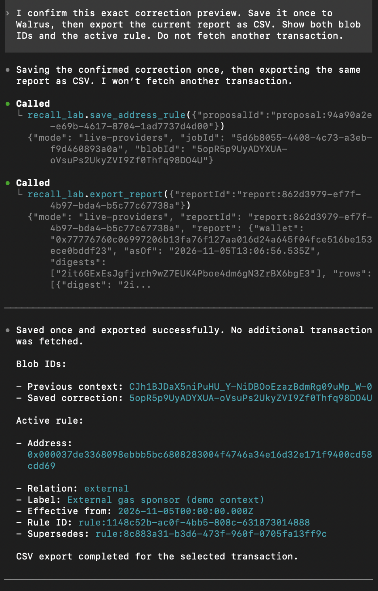

A new Sui conversation,
with the context intact.
Blockchains record what happened. They rarely record what an address means to you. Recall Lab gives that context a place to live beyond one chat.
You ask an agent about a transaction. It finds a gas payer, a token change and several addresses. The numbers may be right, but an address is still just a string. Is it another wallet you use? An external service? Something you have not investigated?
You explain it, and the report becomes easier to understand. Then you open a new conversation. Repeating the explanation every time is unnecessary work; blindly reusing an outdated explanation is worse. That is the problem Recall Lab tackles.
Three jobs, kept distinct
Tatum supplies onchain facts. The app requests selected Sui transactions through native gRPC, validates their identity and normalizes the response. It keeps signed token amounts in exact base units, grouped by coin type. Gas is shown separately from the original net movement.
Walrus stores confirmed context. An address rule includes the wallet, network, owner, project, relation, label and effective date. A correction points to the previous rule rather than erasing it.
The model runs the conversation. It interprets the request, calls the tools, explains the result and asks for confirmation. It does not invent amounts or calculate the CSV. The five tools expose the same contracts to different MCP clients.
What happened in the real run
We ran the workflow through Codex CLI with an existing ChatGPT sign-in, two actual Sui Mainnet transactions from Tatum and a test Walrus account. The client reported model gpt-5.6-luna with medium reasoning effort; judges can choose a model their own account offers.
- Prepare the first report. The chosen wallet appeared as the sender, while another address paid gas. The code preserved the original balance-change rows and left the complex programmable transaction unparsed.
- Confirm an explanation. The user labelled the observed gas payer “Unreviewed gas payer”, relation
unknown. The app displayed the complete preview, then saved it to Walrus after confirmation. - Open a fresh conversation. The next chat received the wallet and a different transaction ID, not the earlier transcript. The tools retrieved the same Walrus record and checked its exact content against the saved receipt hash.
- Confirm a correction. The user changed the interpretation to
external, labelled “External gas sponsor (demo context)”, with an explicit effective date. The new rule superseded the original. - Export. The code recovered both records, applied the correction and generated CSV. The transaction data and gas stayed unchanged.

The first blob is CJh1BJDaX5niPuHU_Y-NiDBOoEzazBdmRg09uMp_W-0. The correction is 5opR5p9UyADYXUA-oVsuPs2UkyZVI9Zf0Thfq98DO4U. The saved tool evidence contains the record contents, confirmations, correction link and counters. The actual CSV can be recomputed offline from those facts.
The interruption mattered too
The first attempt to open the second chat failed during MCP startup. The first write had already completed close to the five-minute expiry of the billing check. We did not capture that initial exception, so expiry is the leading explanation, not a proved historical error code.
We continued the same run after an explicit fresh check of the same Free account and the same key. The namespace, receipt journal and counters stayed intact. No first write was repeated. The final totals were two Tatum calls, two sponsored writes, two content recalls and 38 guarded SDK fetch attempts, with no stopped flag. The launcher now rechecks Free status before the normal second Codex chat and keeps sanitized startup diagnostics.
This was a completed run with a recovery. It was not an uninterrupted first attempt. The distinction is useful: persistence should survive a client problem without making the user start over or submit the same record again.
Why this adds value
The memory is not the token arithmetic. A simple algorithm can apply the same address rules, and it should calculate the same totals. The useful addition is a shared, versioned context layer that an agent can retrieve and explain in a later conversation.
Nor does a stored explanation prove ownership. “This is my other wallet” remains the user's statement. Corrections need dates and scope because a label can be wrong, or the role of an address can change. A model should not turn one confirmed label into a permanent assumption about every network and every wallet.
Where this can help
Personal activity review. A person can explain a recurring address once and reuse that context while reviewing other selected transactions. They can correct the explanation later without losing how an earlier report was interpreted.
Team operations. A team can keep explicit descriptions of operational addresses and their effective dates. A future shared workspace could make the approved context available to another teammate's agent, with access control and audit history.
Support and investigation handoffs. Confirmed observations about a selected transaction can be carried into the next conversation with their record IDs. That helps a new session distinguish a previously checked fact from an assumption that still needs a human answer.
Long-running agent workflows. A task that spans sessions can retrieve its confirmed context without pasting the entire transcript. The same pattern can support different models when they share the tool contracts and the authorized memory account.
The current release supports selected transactions and address explanations. Team sharing and broader investigation workflows are directions for development, not features demonstrated by this run.
Model-agnostic, with clear test coverage
The interface is MCP, not a model-specific prompt parser. The package offers Codex CLI and Claude Desktop. The activity scenario has been verified live on Codex. Claude's configuration and protocol path passed offline tests; its new activity conversation still needs a live rehearsal. Other MCP clients need configuration and validation.
Each judge uses their own account and chooses an available model. The package contains no author's model keys or quotas. Walrus sign-in happens through its browser flow, and the Tatum key is entered privately in Terminal.
What a wider release would need
The next practical improvements are easier onboarding, more transaction fixtures and clearer handling of complex PTBs. The app should only decode a transaction pattern when it can support that interpretation with evidence.
For regular users, a browser application could handle account connection, previews and reports in one place. That needs a supported model integration, explicit memory permissions, clear per-user limits, and a reliable way to review or revoke access. This local release is the inspectable foundation; it does not claim that a website can automatically consume a visitor's existing model subscription.
Shared team context, searchable rule histories, richer exports and more transaction coverage can follow. The rule remains the same: keep chain facts separate from user meaning, preserve corrections and show where the context came from.
Try it yourself
Download the Apple Silicon package, extract it, open Terminal in the folder and run bash start.command. The README includes account setup and the full conversation prompts. You can run the offline checks without provider or model requests.
The verified run used included ChatGPT usage, four included Tatum credits and managed-relayer sponsored Walrus writes, with $0 additional monetary spend. Your own account access and sponsorship must be available; there is no paid fallback. The new walkthrough video is being recorded by the project author.
AI assistance was used for implementation, testing and documentation. Source code is MIT licensed. Validation details and remaining submission work ↗